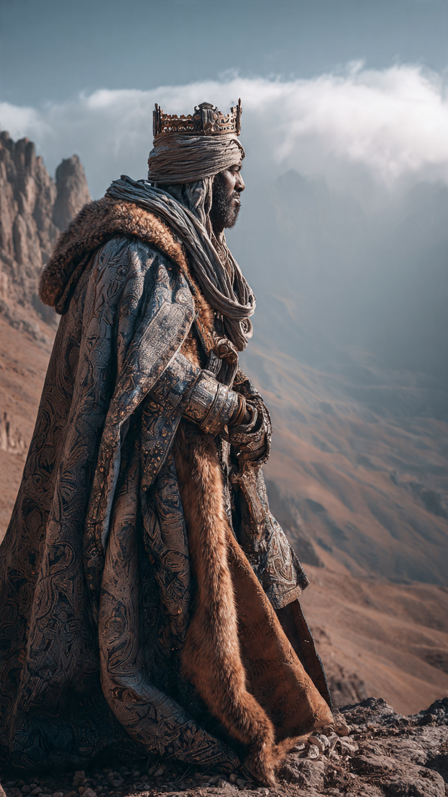
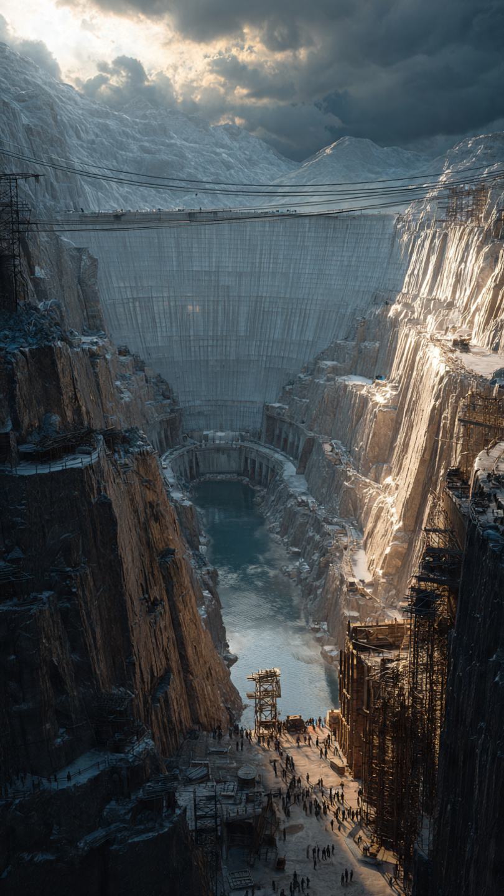

ذو القرنين.. الرحلة إلى سد يأجوج ومأجوج
في زمن قديم جدًا، عاش ملك عظيم عُرف باسم ذو القرنين.
لم يكن عظيمًا بسبب ملكه فقط، بل بسبب ما امتلكه من صفات جعلته مختلفًا عن كثير من الحكام.
وقد ذكر الله قصته في القرآن الكريم في سورة الكهف، فقال تعالى:
"وَيَسْأَلُونَكَ عَن ذِي الْقَرْنَيْنِ ۖ قُلْ سَأَتْلُو عَلَيْكُم مِّنْهُ ذِكْرًا"
كان ذو القرنين ملكًا مُمكَّنًا في الأرض، أعطاه الله القوة والقدرة، لكنه لم يستخدمها في الظلم أو التكبر.
كان يسافر في الأرض، ويرى أحوال الناس، ويحاول أن ينشر العدل بينهم.
لم يكن هدفه جمع الثروات فقط...
بل كان يريد أن يعرف أحوال الأمم، ويساعد من يحتاج إلى المساعدة.
بدأ رحلته الأولى، وسار حتى وصل إلى مكان بعيد.
وهناك وجد قومًا يعيشون في ظروف صعبة، فتعامل معهم بالعدل والحكمة.
ثم واصل رحلته إلى مكان آخر، حتى وصل إلى قوم بين جبلين عظيمين.
كان هؤلاء القوم يعيشون في خوف شديد بسبب خطر يأتيهم من خلف الجبال.
قالوا لذي القرنين:
"يا ذا القرنين، إن يأجوج ومأجوج مفسدون في الأرض، فهل نجعل لك خرجًا على أن تجعل بيننا وبينهم سدًا؟"
كان أمامه اختيار:
أن يأخذ مالًا كثيرًا مقابل بناء السد...
أو أن يساعدهم بما يستطيع دون طمع.
فاختار طريق العدل، وقرر أن يبني لهم سدًا قويًا يحميهم.
📷 الصورة رقم 1

نظر ذو القرنين إلى القوم الذين طلبوا مساعدته، فلم يطلب منهم مالًا كثيرًا، بل قال لهم إن ما أعطاه الله له من القوة والقدرة هو خير من أموالهم.
قال تعالى:
"مَا مَكَّنِّي فِيهِ رَبِّي خَيْرٌ"
لكنه طلب منهم أن يساعدوه بالعمل.
فقد علمهم أن بناء الحضارات لا يكون بالانتظار فقط، بل بالتعاون والاجتهاد.
بدأ القوم بجمع قطع الحديد الكبيرة، ووضعوها بين الجبلين.
وكان العمل ضخمًا يحتاج إلى صبر وتنظيم.
حتى امتلأ المكان بقطع الحديد، فأشعل ذو القرنين النار حتى أصبحت كأنها كتلة واحدة قوية.
ثم قال لهم:
"آتوني أفرغ عليه قطرًا"
أي صبوا عليه شيئًا يزيده قوة وتماسكًا.
وبذلك أصبح السد قويًا جدًا، لا يستطيع يأجوج ومأجوج أن يتسلقوه أو يخترقوه.
فرح القوم بهذا العمل العظيم، وشكروا ذو القرنين على مساعدته لهم.
لكن ذو القرنين لم ينسب الفضل لنفسه، بل قال:
"هَٰذَا رَحْمَةٌ مِّن رَّبِّي"
كان يعلم أن النجاح والتوفيق من الله، وأن الإنسان مهما بلغ من قوة فهو محتاج إلى ربه.
وهكذا أصبح السد رمزًا للعدل والحكمة، وليس مجرد بناء من الحديد.
فقد استخدم ذو القرنين قوته لحماية الضعفاء، لا للسيطرة عليهم.
📷 الصورة رقم 2

بعد بناء السد، عاش القوم في أمان بعد خوف طويل.
فقد أصبح لديهم حاجز يحميهم من خطر يأجوج ومأجوج، وعادت إليهم الطمأنينة بعد سنوات من القلق.
أما ذو القرنين، فلم يبقَ هناك ليتكبر بما صنعه، ولم يعتبر نفسه صاحب فضل على الناس.
بل واصل رحلته في الأرض، يبحث عن العدل وينشر الخير.
كانت قصته مختلفة عن كثير من قصص الملوك.
فبعض الملوك عندما يملكون القوة يستخدمونها للسيطرة والظلم...
أما ذو القرنين فقد استخدمها لمساعدة الناس.
وقد اختلف العلماء والمؤرخون في تفاصيل كثيرة عن شخصيته وزمانه، لكن القرآن الكريم ركّز على أهم ما في قصته:
الإيمان، والعدل، وحسن استخدام القوة.
وتعلمنا قصته أن القوة ليست في امتلاك الجيوش فقط...
بل في القدرة على حماية الضعيف، وإقامة العدل، ومساعدة الآخرين.
كما تعلمنا أن الإنسان مهما امتلك من مكانة ونجاح، يجب أن يتذكر أن كل نعمة هي من الله.
فقد قال ذو القرنين بعد إنجاز عمل عظيم:
"هَٰذَا رَحْمَةٌ مِّن رَّبِّي"
وهذه الجملة تلخص شخصيته:
قوة مع تواضع...
وحكم مع رحمة...
وقدرة مع شكر.
وبقيت قصة ذو القرنين واحدة من أعظم القصص التي تعلم الناس أن أعظم الحكام ليس من يملك أكثر...
بل من يستخدم ما يملك في الخير.
🏔️📖 انتهت القصة 📖🏔️
العبرة:
القوة الحقيقية ليست في السيطرة على الناس، بل في نصرة الحق ومساعدة الآخرين وشكر الله على النعم.